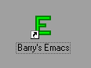
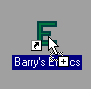
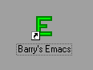
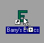

Emacs provides facilities that go beyond simple text insertion and deletion: automatic indentation of programs; viewing multiple files at once, as well as expressions and comments in several different programming languages.
Emacs has extensive help, both in the form of help files and within Emacs itself. You can also use it to find out what any command does, or to find all the commands that pertain to a specific topic.
You can change the definitions of Emacs commands in small ways. For example, if you use a programming language in which comments start with /* and end with */, you can tell the Emacs comment manipulation commands to use those strings. Another sort of customisation is rearrangement of the command set.
Most of the customisation of Emacs is done via the emacs_user:emacsinit.ml initialisation file.
The remaining customisations of Emacs are done via the Edit, Preferences... menu under Windows. And under Unix via the $HOME/.Xdefaults file.
Under Windows you can start Emacs using all the usual Windows methods for starting an application.


The bemacs command sends your command line to the Barry's Emacs application. If Barry's Emacs is not running yet the bemacs command will start one running. If Barry's Emacs is already running the command line is sent to the the running Barry's Emacs.
The normal bemacs command line allows you to specify a list of filenames of the files you wish to edit.
bemacs file
bemacs file1 file2 file3
You can use either "/" or "-" to start a switch. For example /line and -line are treated as equivalent.
By using the following command line switches you can change the default behaviour of the bemacs command.
The MLisp Programmers Guide has furthur information about Command Lines. Including how to customise command line handling.
Edit the file emacsinit.ml at line number 106:
bemacs /line=106 emacsinit.ml
Edit the files emacs.h, emacs.cpp, use a Barry's Emacs called "Dev" and make Barry's Emacs change directory:
cd \emacs\src bemacs /name=Dev /cd emacs.h emacs.cpp
Edit the files emacs.h at line 19, emacs.cpp at line 254, use a Barry's Emacs called "Fred" and make Barry's Emacs change directory:
cd \emacs\src bemacs -name=Fred -cd -line:19 emacs.h -line=254 emacs.cpp
Use emacs to update a file as part of a CMD script. Notice the need to use start /wait to make the CMD shell wait for the bemacs command to complete.
echo log message for work done >log.tmp start /wait bemacs /wait log.tmp echo Log message type log.tmp